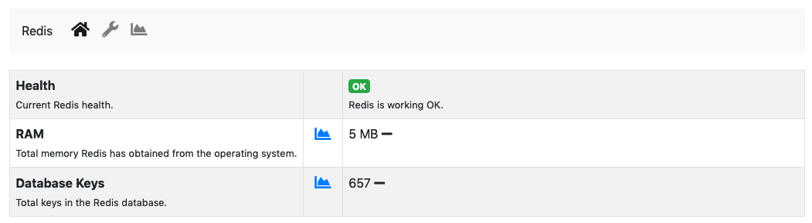
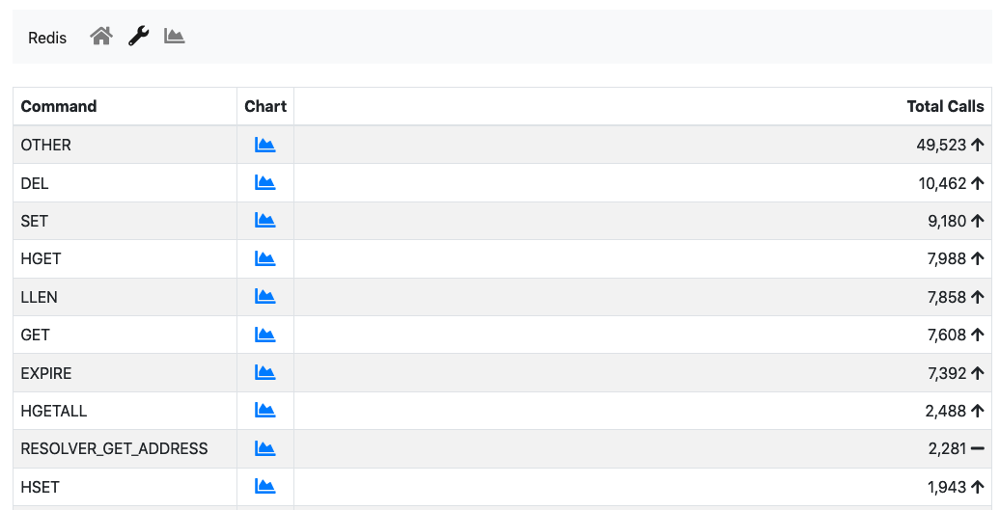

Redis
Redis — это хранилище значений ключей, используемое ntopng для кэширования данных и предпочтений. Redis работает как внешняя служба как в Linux, так и в Windows. ntopng соединяется с Redis с помощью разъемов. Отсутствие подключения к Redis может привести к неисправности ntopng. Redis должен всегда быть включен, работать и доступен для обеспечения функциональности ntopng.
Цель этого монитора — проверить работоспособность Redis и используемые ресурсы. На странице есть две вкладки: Обзор и Исторические данные.

Обзор монитора Redis
Статус Карта, обновляющаяся каждые 5 секунд, содержит три элемента:
Health: Значок зеленого или красного цвета, в зависимости от статуса Redis. Значок становится красным, когда Redis не удается сохранить свои данные на диск (или, когда Redis включен параметр «Добавить только файл» (AOF) для его записи), в противном случае он зеленый.RAM: Общий объем памяти Redis, полученный от операционной системы.Database Keys: Общее количество ключей, хранящихся в настоящее время в Redis.
На Windows Redis не сообщается о своем состоянии и количестве клавиш: отображается только RAM. Значок диаграммы рядом со значением открывает соответствующую диаграмму.
ntopng взаимодействует с Redis с помощью команды. Под карточкой в таблице указано, сколько раз была выполнена каждая команда с момента запуска ntopng. Кнопка диаграммы в строке со временем открывает вызовы этой команды.

Команды Redis
Эта таблица в основном полезна для отладки аномального использования команд и не имеет большого значения для пользователя.
Исторические данные на вкладке показаны графики:
Сложенный Вызов главных команд чтобы иметь обзор основных команд, используемых во времени.
RAM использовано
Ключи базы данных
Количество вызовов подмножества используемых команд Redis.
Таймсерии можно отключить из ntopngPreferences, вкладка Таймсерии->Системные зонды: Исторические данные вкладка и кнопки диаграммы становятся неактивными.